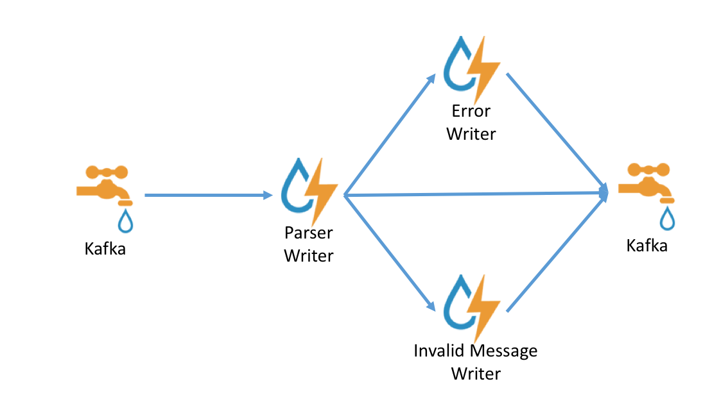

Parsers
Introduction
Parsers are pluggable components which are used to transform raw data (textual or raw bytes) into JSON messages suitable for downstream enrichment and indexing.
There are two general types types of parsers:
- A parser written in Java which conforms to the MessageParser interface. This kind of parser is optimized for speed and performance and is built for use with higher velocity topologies. These parsers are not easily modifiable and in order to make changes to them the entire topology need to be recompiled.
- A general purpose parser. This type of parser is primarily designed for lower-velocity topologies or for quickly standing up a parser for a new telemetry before a permanent Java parser can be written for it. As of the time of this writing, we have:
- Grok parser: org.apache.metron.parsers.GrokParser with possible parserConfig entries of
- grokPath : The path in HDFS (or in the Jar) to the grok statement
- patternLabel : The pattern label to use from the grok statement
- timestampField : The field to use for timestamp
- timeFields : A list of fields to be treated as time
- dateFormat : The date format to use to parse the time fields
- timezone : The timezone to use. UTC is default.
- CSV Parser: org.apache.metron.parsers.csv.CSVParser with possible parserConfig entries of
- timestampFormat : The date format of the timestamp to use. If unspecified, the parser assumes the timestamp is ms since unix epoch.
- columns : A map of column names you wish to extract from the CSV to their offsets (e.g. { 'name' : 1, 'profession' : 3} would be a column map for extracting the 2nd and 4th columns from a CSV)
- separator : The column separator, , by default.
- JSON Map Parser: org.apache.metron.parsers.json.JSONMapParser with possible parserConfig entries of
- mapStrategy : A strategy to indicate how to handle multi-dimensional Maps. This is one of
- DROP : Drop fields which contain maps
- UNFOLD : Unfold inner maps. So { "foo" : { "bar" : 1} } would turn into {"foo.bar" : 1}
- ALLOW : Allow multidimensional maps
- ERROR : Throw an error when a multidimensional map is encountered
- jsonpQuery : A JSON Path query string. If present, the result of the JSON Path query should be a list of messages. This is useful if you have a JSON document which contains a list or array of messages embedded in it, and you do not have another means of splitting the message.
- A field called timestamp is expected to exist and, if it does not, then current time is inserted.
- mapStrategy : A strategy to indicate how to handle multi-dimensional Maps. This is one of
- Grok parser: org.apache.metron.parsers.GrokParser with possible parserConfig entries of
Parser Error Routing
Currently, we have a few mechanisms for either deferring processing of messages or marking messages as invalid.
Invalidation Errors
There are two reasons a message will be marked as invalid:
- Fail global validation
- Fail the parser’s validate function (generally that means to not have a timestamp field or a original_string field.
Those messages which are marked as invalid are sent to the error queue with an indication that they are invalid in the error message.
Filtered
One can also filter a message by specifying a filterClassName in the parser config. Filtered messages are just dropped rather than passed through.
Parser Architecture

Data flows through the parser bolt via kafka and into the enrichments topology in kafka. Errors are collected with the context of the error (e.g. stacktrace) and original message causing the error and sent to an error queue. Invalid messages as determined by global validation functions are also treated as errors and sent to an error queue.
Message Format
All Metron messages follow a specific format in order to ingest a message. If a message does not conform to this format it will be dropped and put onto an error queue for further examination. The message must be of a JSON format and must have a JSON tag message like so:
{"message" : message content}
Where appropriate there is also a standardization around the 5-tuple JSON fields. This is done so the topology correlation engine further down stream can correlate messages from different topologies by these fields. We are currently working on expanding the message standardization beyond these fields, but this feature is not yet availabe. The standard field names are as follows:
- ip_src_addr: layer 3 source IP
- ip_dst_addr: layer 3 dest IP
- ip_src_port: layer 4 source port
- ip_dst_port: layer 4 dest port
- protocol: layer 4 protocol
- timestamp (epoch)
- original_string: A human friendly string representation of the message
The timestamp and original_string fields are madatory. The remaining standard fields are optional. If any of the optional fields are not applicable then the field should be left out of the JSON.
So putting it all together a typical Metron message with all 5-tuple fields present would look like the following:
{
"message":
{"ip_src_addr": xxxx,
"ip_dst_addr": xxxx,
"ip_src_port": xxxx,
"ip_dst_port": xxxx,
"protocol": xxxx,
"original_string": xxx,
"additional-field 1": xxx,
}
}
Global Configuration
There are a few properties which can be managed in the global configuration that have pertinence to parsers and parsing in general.
parser.error.topic
The topic where messages which were unable to be parsed due to error are sent. Error messages will be indexed under a sensor type of error and the messages will have the following fields:
- sensor.type: error
- failed_sensor_type : The sensor type of the message which wasn’t able to be parsed
- error_type : The error type, in this case parser.
- stack : The stack trace of the error
- hostname : The hostname of the node where the error happened
- raw_message : The raw message in string form
- raw_message_bytes : The raw message bytes
- error_hash : A hash of the error message
Parser Configuration
The configuration for the various parser topologies is defined by JSON documents stored in zookeeper.
The document is structured in the following way
- parserClassName : The fully qualified classname for the parser to be used.
- filterClassName : The filter to use. This may be a fully qualified classname of a Class that implements the org.apache.metron.parsers.interfaces.MessageFilter<JSONObject> interface. Message Filters are intended to allow the user to ignore a set of messages via custom logic. The existing implementations are:
- STELLAR : Allows you to apply a stellar statement which returns a boolean, which will pass every message for which the statement returns true. The Stellar statement that is to be applied is specified by the filter.query property in the parserConfig. Example Stellar Filter which includes messages which contain a the field1 field:
{
"filterClassName" : "STELLAR"
,"parserConfig" : {
"filter.query" : "exists(field1)"
}
}
- sensorTopic : The kafka topic to send the parsed messages to. If the topic is prefixed and suffixed by / then it is assumed to be a regex and will match any topic matching the pattern (e.g. /bro.*/ would match bro_cust0, bro_cust1 and bro_cust2)
- readMetadata : Boolean indicating whether to read metadata or not (false by default). See below for a discussion about metadata.
- mergeMetadata : Boolean indicating whether to merge metadata with the message or not (false by default). See below for a discussion about metadata.
- parserConfig : A JSON Map representing the parser implementation specific configuration.
- fieldTransformations : An array of complex objects representing the transformations to be done on the message generated from the parser before writing out to the kafka topic.
- spoutParallelism : The kafka spout parallelism (default to 1). This can be overridden on the command line.
- spoutNumTasks : The number of tasks for the spout (default to 1). This can be overridden on the command line.
- parserParallelism : The parser bolt parallelism (default to 1). This can be overridden on the command line.
- parserNumTasks : The number of tasks for the parser bolt (default to 1). This can be overridden on the command line.
- errorWriterParallelism : The error writer bolt parallelism (default to 1). This can be overridden on the command line.
- errorWriterNumTasks : The number of tasks for the error writer bolt (default to 1). This can be overridden on the command line.
- numWorkers : The number of workers to use in the topology (default is the storm default of 1).
- numAckers : The number of acker executors to use in the topology (default is the storm default of 1).
- spoutConfig : A map representing a custom spout config (this is a map). This can be overridden on the command line.
- securityProtocol : The security protocol to use for reading from kafka (this is a string). This can be overridden on the command line and also specified in the spout config via the security.protocol key. If both are specified, then they are merged and the CLI will take precedence.
- stormConfig : The storm config to use (this is a map). This can be overridden on the command line. If both are specified, they are merged with CLI properties taking precedence.
- cacheConfig : Cache config for stellar field transformations. This configures a least frequently used cache. This is a map with the following keys. If not explicitly configured (the default), then no cache will be used.
- stellar.cache.maxSize - The maximum number of elements in the cache. Default is to not use a cache.
- stellar.cache.maxTimeRetain - The maximum amount of time an element is kept in the cache (in minutes). Default is to not use a cache.
Example of a cache config to contain at max 20000 stellar expressions for at most 20 minutes.:
{
"cacheConfig" : {
"stellar.cache.maxSize" : 20000,
"stellar.cache.maxTimeRetain" : 20
}
}
The fieldTransformations is a complex object which defines a transformation which can be done to a message. This transformation can
- Modify existing fields to a message
- Add new fields given the values of existing fields of a message
- Remove existing fields of a message
Metadata
Metadata is a useful thing to send to Metron and use during enrichment or threat intelligence.
Consider the following scenarios:
- You have multiple telemetry sources of the same type that you want to
- ensure downstream analysts can differentiate
- ensure profiles consider independently as they have different seasonality or some other fundamental characteristic
As such, there are two types of metadata that we seek to support in Metron:
- Environmental metadata : Metadata about the system at large
- Consider the possibility that you have multiple kafka topics being processed by one parser and you want to tag the messages with the kafka topic
- At the moment, only the kafka topic is kept as the field name.
- Custom metadata: Custom metadata from an individual telemetry source that one might want to use within Metron.
Metadata is controlled by two fields in the parser:
- readMetadata : This is a boolean indicating whether metadata will be read and made available to Field transformations (i.e. Stellar field transformations). The default is false.
- mergeMetadata : This is a boolean indicating whether metadata fields will be merged with the message automatically.
That is to say, if this property is set to true then every metadata field will become part of the messages and, consequently, also available for use in field transformations.
Field Naming
In order to avoid collisions from metadata fields, metadata fields will be prefixed with metron.metadata..
So, for instance the kafka topic would be in the field metron.metadata.topic.
Specifying Custom Metadata
Custom metadata is specified by sending a JSON Map in the key. If no key is sent, then, obviously, no metadata will be parsed. For instance, sending a metadata field called customer_id could be done by sending
{
"customer_id" : "my_customer_id"
}
in the kafka key. This would be exposed as the field metron.metadata.customer_id to stellar field transformations as well, if mergeMetadata is true, available as a field in its own right.
fieldTransformation configuration
The format of a fieldTransformation is as follows:
- input : An array of fields or a single field representing the input. This is optional; if unspecified, then the whole message is passed as input.
- output : The outputs to produce from the transformation. If unspecified, it is assumed to be the same as inputs.
- transformation : The fully qualified classname of the transformation to be used. This is either a class which implements FieldTransformation or a member of the FieldTransformations enum.
- config : A String to Object map of transformation specific configuration.
The currently implemented fieldTransformations are:
- REMOVE : This transformation removes the specified input fields. If you want a conditional removal, you can pass a Metron Query Language statement to define the conditions under which you want to remove the fields.
Consider the following simple configuration which will remove field1 unconditionally:
{
...
"fieldTransformations" : [
{
"input" : "field1"
, "transformation" : "REMOVE"
}
]
}
Consider the following simple sensor parser configuration which will remove field1 whenever field2 exists and whose corresponding equal to ‘foo’:
{
...
"fieldTransformations" : [
{
"input" : "field1"
, "transformation" : "REMOVE"
, "config" : {
"condition" : "exists(field2) and field2 == 'foo'"
}
}
]
}
- SELECT: This transformation filters the fields in the message to include only the configured output fields, and drops any not explicitly included.
For example:
{
...
"fieldTransformations" : [
{
"output" : ["field1", "field2" ]
, "transformation" : "SELECT"
}
]
}
when applied to a message containing keys field1, field2 and field3, will only output the first two. It is also worth noting that two standard fields - timestamp and original_source - will always be passed along whether they are listed in output or not, since they are considered core required fields.
- IP_PROTOCOL : This transformation maps IANA protocol numbers to consistent string representations.
Consider the following sensor parser config to map the protocol field to a textual representation of the protocol:
{
...
"fieldTransformations" : [
{
"input" : "protocol"
, "transformation" : "IP_PROTOCOL"
}
]
}
This transformation would transform { "protocol" : 6, "source.type" : "bro", ... } into { "protocol" : "TCP", "source.type" : "bro", ...}
-
STELLAR : This transformation executes a set of transformations expressed as Stellar Language statements.
-
RENAME : This transformation allows users to rename a set of fields. Specifically, the config is presumed to be the mapping. The keys to the config are the existing field names and the values for the config map are the associated new field name.
The following config will rename the fields old_field and different_old_field to new_field and different_new_field respectively:
{
...
"fieldTransformations" : [
{
"transformation" : "RENAME",
, "config" : {
"old_field" : "new_field",
"different_old_field" : "different_new_field"
}
}
]
}
Assignment to null
If, in your field transformation, you assign a field to null, the field will be removed. You can use this capability to rename variables. It is preferred, however, that the RENAME field transformation is used in this situation as it is less awkward.
Consider this example:
"fieldTransformations" : [
{ "transformation" : "STELLAR"
,"output" : [ "new_field", "old_field"]
,"config" : {
"new_field" : "old_field"
,"old_field" : "null"
}
}
]
This would set new_field to the value of old_field and remove old_field.
Warning: Transforming the same field twice
Currently, the stellar expressions are expressed in the form of a map where the keys define the fields and the values define the Stellar expressions. You order the expression evaluation in the output field. A consequence of this choice to store the assignments as a map is that the same field cannot appear in the map as a key twice.
For instance, the following will not function as expected:
"fieldTransformations" : [
{ "transformation" : "STELLAR"
,"output" : [ "new_field"]
,"config" : {
"new_field" : "TO_UPPER(field1)"
,"new_field" : "TO_LOWER(new_field)"
}
}
]
In the above example, the last instance of new_field will win and TO_LOWER(new_field) will be evaluated while TO_UPPER(field1) will be skipped.
Example
Consider the following sensor parser config to add three new fields to a message:
- utc_timestamp : The unix epoch timestamp based on the timestamp field, a dc field which is the data center the message comes from and a dc2tz map mapping data centers to timezones
- url_host : The host associated with the url in the url field
- url_protocol : The protocol associated with the url in the url field
{
...
"fieldTransformations" : [
{
"transformation" : "STELLAR"
,"output" : [ "utc_timestamp", "url_host", "url_protocol" ]
,"config" : {
"utc_timestamp" : "TO_EPOCH_TIMESTAMP(timestamp, 'yyyy-MM-dd
HH:mm:ss', MAP_GET(dc, dc2tz, 'UTC') )"
,"url_host" : "URL_TO_HOST(url)"
,"url_protocol" : "URL_TO_PROTOCOL(url)"
}
}
]
,"parserConfig" : {
"dc2tz" : {
"nyc" : "EST"
,"la" : "PST"
,"london" : "UTC"
}
}
}
Note that the dc2tz map is in the parser config, so it is accessible in the functions.
An Example Configuration for a Sensor
Consider the following example configuration for the yaf sensor:
{
"parserClassName":"org.apache.metron.parsers.GrokParser",
"sensorTopic":"yaf",
"fieldTransformations" : [
{
"input" : "protocol"
,"transformation": "IP_PROTOCOL"
}
],
"parserConfig":
{
"grokPath":"/patterns/yaf",
"patternLabel":"YAF_DELIMITED",
"timestampField":"start_time",
"timeFields": ["start_time", "end_time"],
"dateFormat":"yyyy-MM-dd HH:mm:ss.S"
}
}
Parser Adapters
Parser adapters are loaded dynamically in each Metron topology. They are defined in the Parser Config (defined above) JSON file in Zookeeper.
Java Parser Adapters
Java parser adapters are indended for higher-velocity topologies and are not easily changed or extended. As the adoption of Metron continues we plan on extending our library of Java adapters to process more log formats. As of this moment the Java adapters included with Metron are:
- org.apache.metron.parsers.ise.BasicIseParser : Parse ISE messages
- org.apache.metron.parsers.bro.BasicBroParser : Parse Bro messages
- org.apache.metron.parsers.sourcefire.BasicSourcefireParser : Parse Sourcefire messages
- org.apache.metron.parsers.lancope.BasicLancopeParser : Parse Lancope messages
Grok Parser Adapters
Grok parser adapters are designed primarly for someone who is not a Java coder for quickly standing up a parser adapter for lower velocity topologies. Grok relies on Regex for message parsing, which is much slower than purpose-built Java parsers, but is more extensible. Grok parsers are defined via a config file and the topplogy does not need to be recombiled in order to make changes to them. An example of a Grok perser is:
- org.apache.metron.parsers.GrokParser
For more information on the Grok project please refer to the following link:
https://github.com/thekrakken/java-grok
Starting the Parser Topology
Starting a particular parser topology on a running Metron deployment is as easy as running the start_parser_topology.sh script located in $METRON_HOME/bin. This utility will allow you to configure and start the running topology assuming that the sensor specific parser configuration exists within zookeeper.
The usage for start_parser_topology.sh is as follows:
usage: start_parser_topology.sh
-e,--extra_topology_options <JSON_FILE> Extra options in the form
of a JSON file with a map
for content.
-esc,--extra_kafka_spout_config <JSON_FILE> Extra spout config options
in the form of a JSON file
with a map for content.
Possible keys are:
retryDelayMaxMs,retryDelay
Multiplier,retryInitialDel
ayMs,stateUpdateIntervalMs
,bufferSizeBytes,fetchMaxW
ait,fetchSizeBytes,maxOffs
etBehind,metricsTimeBucket
SizeInSecs,socketTimeoutMs
-ewnt,--error_writer_num_tasks <NUM_TASKS> Error Writer Num Tasks
-ewp,--error_writer_p <PARALLELISM_HINT> Error Writer Parallelism
Hint
-h,--help This screen
-iwnt,--invalid_writer_num_tasks <NUM_TASKS> Invalid Writer Num Tasks
-iwp,--invalid_writer_p <PARALLELISM_HINT> Invalid Message Writer Parallelism Hint
-k,--kafka <BROKER_URL> Kafka Broker URL
-ksp,--kafka_security_protocol <SECURITY_PROTOCOL> Kafka Security Protocol
-mt,--message_timeout <TIMEOUT_IN_SECS> Message Timeout in Seconds
-mtp,--max_task_parallelism <MAX_TASK> Max task parallelism
-na,--num_ackers <NUM_ACKERS> Number of Ackers
-nw,--num_workers <NUM_WORKERS> Number of Workers
-ot,--output_topic <KAFKA_TOPIC> Output Kafka Topic
-pnt,--parser_num_tasks <NUM_TASKS> Parser Num Tasks
-pp,--parser_p <PARALLELISM_HINT> Parser Parallelism Hint
-s,--sensor <SENSOR_TYPE> Sensor Type
-snt,--spout_num_tasks <NUM_TASKS> Spout Num Tasks
-sp,--spout_p <SPOUT_PARALLELISM_HINT> Spout Parallelism Hint
-t,--test <TEST> Run in Test Mode
-z,--zk <ZK_QUORUM> Zookeeper Quroum URL
(zk1:2181,zk2:2181,...
The --extra_kafka_spout_config Option
These options are intended to configure the Storm Kafka Spout more completely. These options can be specified in a JSON file containing a map associating the kafka spout configuration parameter to a value. The range of values possible to configure are:
- spout.pollTimeoutMs - Specifies the time, in milliseconds, spent waiting in poll if data is not available. Default is 2s
- spout.firstPollOffsetStrategy - Sets the offset used by the Kafka spout in the first poll to Kafka broker upon process start. One of
- EARLIEST
- LATEST
- UNCOMMITTED_EARLIEST - Last uncommitted and if offsets aren’t found, defaults to earliest. NOTE: This is the default.
- UNCOMMITTED_LATEST - Last uncommitted and if offsets aren’t found, defaults to latest.
- spout.offsetCommitPeriodMs - Specifies the period, in milliseconds, the offset commit task is periodically called. Default is 15s.
- spout.maxUncommittedOffsets - Defines the max number of polled offsets (records) that can be pending commit, before another poll can take place. Once this limit is reached, no more offsets (records) can be polled until the next successful commit(s) sets the number of pending offsets bellow the threshold. The default is 10,000,000.
- spout.maxRetries - Defines the max number of retrials in case of tuple failure. The default is to retry forever, which means that no new records are committed until the previous polled records have been acked. This guarantees at once delivery of all the previously polled records. By specifying a finite value for maxRetries, the user decides to sacrifice guarantee of delivery for the previous polled records in favor of processing more records.
- Any of the configs in the Consumer API for Kafka 0.10.x
For instance, creating a JSON file which will set the offsets to UNCOMMITTED_EARLIEST
{
"spout.firstPollOffsetStrategy" : "UNCOMMITTED_EARLIEST"
}
This would be loaded by passing the file as argument to --extra_kafka_spout_config
The --extra_topology_options Option
These options are intended to be Storm configuration options and will live in a JSON file which will be loaded into the Storm config. For instance, if you wanted to set a storm property on the config called topology.ticks.tuple.freq.secs to 1000 and storm.local.dir to /opt/my/path you could create a file called custom_config.json containing
{
"topology.ticks.tuple.freq.secs" : 1000,
"storm.local.dir" : "/opt/my/path"
}
and pass --extra_topology_options custom_config.json to start_parser_topology.sh.
Notes on Performance Tuning
Default installed Metron is untuned for production deployment. There are a few knobs to tune to get the most out of your system.
Notes on Adding a New Sensor
In order to allow for meta alerts to be queries alongside regular alerts in Elasticsearch 2.x, it is necessary to add an additional field to the templates and mapping for existing sensors.
Please see a description of the steps necessary to make this change in the metron-elasticsearch Using Metron with Elasticsearch 2.x
Kafka Queue
The kafka queue associated with your parser is a collection point for all of the data sent to your parser. As such, make sure that the number of partitions in the kafka topic is sufficient to handle the throughput that you expect from your parser topology.
Parser Topology
The enrichment topology as started by the $METRON_HOME/bin/start_parser_topology.sh script uses a default of one executor per bolt. In a real production system, this should be customized by modifying the arguments sent to this utility.
- Topology Wide
- --num_workers : The number of workers for the topology
- --num_ackers : The number of ackers for the topology
- The Kafka Spout
- --spout_num_tasks : The number of tasks for the spout
- --spout_p : The parallelism hint for the spout
- Ensure that the spout has enough parallelism so that it can dedicate a worker per partition in your kafka topic.
- The Parser Bolt
- --parser_num_tasks : The number of tasks for the parser bolt
- --parser_p : The parallelism hint for the spout
- This is bolt that gets the most processing, so ensure that it is configured with sufficient parallelism to match your throughput expectations.
- The Error Message Writer Bolt
- --error_writer_num_tasks : The number of tasks for the error writer bolt
- --error_writer_p : The parallelism hint for the error writer bolt
Finally, if workers and executors are new to you, the following might be of use to you: